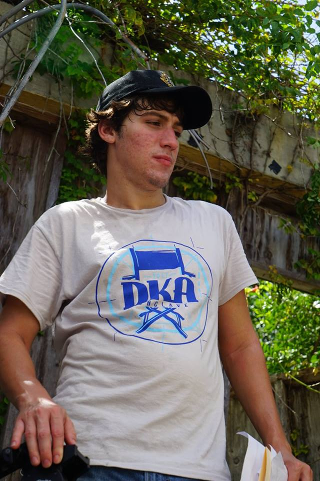

ABOUT
Manuel is a 20-year-old, New York born filmmaker, raised in Miami, Buenos Aires, and
Sao Paulo, Brazil.
Since then, Manuel has gone on to receive numerous awards for his films, including
Small Talk and Homeless. He is currently pursuing an undergraduate degree in filmmaking,
attempting to blend Magical Realism, Drama, and Comedy to create unique canvases for
characters to inhabit. His films include Scruffy Rex, Haunted and most recently,
The Fortune Teller.